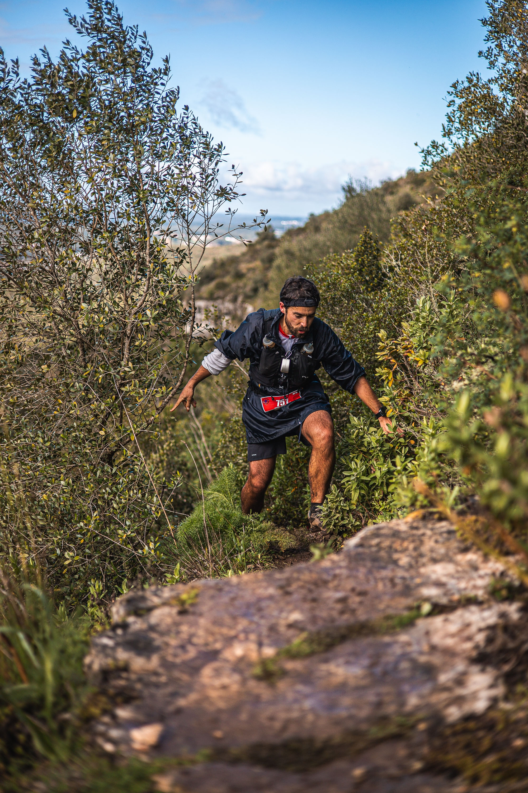

Edição de 2025 dos 60 km do Trail de Conímbriga Terras de Sicó,
passagem pelo Canhão Fluviocársico do Vale do Poio,
fotografia tirada por Fotos do Pio.
Obrigado pela visita, este projeto
destinou-se à promoção de uma modalidade
desportiva que regularmente pratico.
Para quaisquer comentários ou questões,
clicar com o botão certo do rato
sobre o meu contacto em baixo.